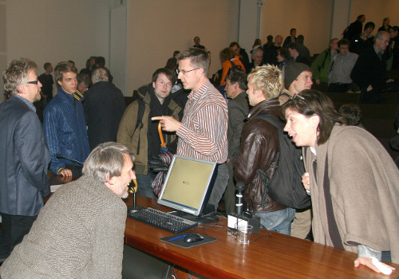

Suomen evankelisluterilainen Opiskelija- ja koululaislähetys OPKO ry järjesti lokakuussa Helsingin yliopiston Porthaniassa tilaisuuden, jossa professorit Kari Enqvist ja Tapio Puolimatka keskustelivat aiheesta ”johtaako tiede ateismiin”. Enqvist, Skepsiksen tieteellisen neuvottelukunnan jäsen, osoitti että kreationistien tilaisuuksiin kannattaa osallistua siitä uhasta huolimatta, että he voivat jälkeenpäin mainostaa ”yliopistolla pidettyä luentoaan”, jossa ”puhumassa oli Tieto-Finlandian voittanut kosmologian professori”.
Haaste kannattaa ottaa vastaan, jos on verbaalisesti, tiedollisesti ja älyllisesti huippuluokkaa. Kari Enqvist on. Skepsiksen huuhaapalkinnon viime vuonna saanut kasvatustieteen professori Puolimatka ei saanut lokakuun tapahtumasta sulkia hattuunsa, sillä Enqvist pesi hänet keskustelussa kuusi-nolla.
Enqvist kritisoi alustuksessaan tilaisuuden otsikkoa.
– Johtaako tiede ateismiin? Kysymys on sellainen, jonka vain uskonnollinen fundamentalisti voi esittää. Kysymys on mieletön ja kertoo, ettei sen esittäjä ymmärrä, mitä tiede oikeasti on.
– Tiede ei ole kaiken tietomme summa. Tiede on metodi, tapa saada tietoa. Siihen ei liity mitään mystistä. Se on arkiajattelua ja tavallista havainnointia, mutta äärimmilleen hiottuna. Välttääkseen arkipuheen epäselvyyksiä ja monimielisyyksiä tiede pyrkii käyttämään matematiikkaa, joka on aina yksikäsitteistä. Kun sanotaan, että 1+1=2, ei tulkinnoille jää sijaa. Sanat sen sijaan viettelevät ja johtavat harhaan, kuten Puolimatkan puheissa on kuultu.
– Tiede ei luota pelkästään silmiin ja korviin. Havaintotarkkuuden lisäämiseksi ja virheiden välttämiseksi tieteessä käytetään apuna eri laisia laitteita, koska ihmisaistit pettävät helposti. Ihmismieli on oikukas ja helposti johdateltavissa.
– Jo varhaiset tähtitieteilijät mittailivat tähtien sijaintia kulmalevyllä ja siihen liitetyllä tähtäinsauvalla. Galileo Galilei otti avuksi teleskoopin. Virhelähteiden eliminoimiseksi havaintoja pyritään tietysti tekemään täysin kontrolloiduissa olosuhteissa, jos se on mahdollista, ja toistamaan jopa miljardeja kertoja, kuten esimerkiksi Euroopan hiukkasfysiikan tutkimuskeskuksen Cernin LHC-kiihdyttimessä.
– Näin me teemme, koska käytäntö on osoittanut, että kyseessä on ylivoimaisesti paras ja varmin tapa saada tietoa. Kännykät ja kuulennot, käsitys aineen olemuksesta ja vaikkapa sähkö ovat asioita, joissa sisäisellä ilmoituksella, syvällä vakaumuksella tai abstraktilla filosofoinnilla ei ole osaa eikä arpaa.
Mitään loogista pakkoa empiirisen tieteen ylivertaisuuteen ei Enqvistin mukaan ole, mutta käytäntö, joka on armoton ja lahjomaton tuomari, on vuosisatojen kuluessa vain kaivertanut tieteen voittoisuuden viestin vastahakoisen ihmiskunnan tajuntaan.
– Tiede ei siis ole sama asia kuin tieto. Se käy ilmi arkipuheestamme. Sanomme, että tiedettä tehdään. Me tiedemiehet teemme tiedettä, emme tietoa. Tiede on tekemisen väline, eikä se sellaisena ole deistinen tai teistinen sen paremmin kuin ateistinenkaan. Tiede on uskonnotonta. Se on metodi, joka ei piittaa Jumalan olemassaolosta.
– Tämä ei johdu siitä, että tiede jotenkin pyrkisi väistämään uskonnollisia kysymyksiä. Tieteen objekteilla ei ole mitään rajoitusta. Sen kohteena on kaikki, mikä on olemassa, kaikki julkinen tieto, minkä hiottu arkijärki voi saavuttaa. Mikään ei ole sille vierasta, eikä mikään ole sille pyhää.
– Uskonto kuitenkin rajaa itse itsensä tieteen ulkopuolelle. Minullekin on monta kertaa julistettu, että tiede ei voi todistaa, ettei Jumalaa ole olemassa. Tämä ei ole syvällinen oivallus. Siinä huomio kiinnittyy lähinnä voitonriemuun ja helpotukseen, jolla nämä sanat lausutaan. Se on sukua herätykselle, jonka jokainen teini-ikäinen joskus kokee havahtuessaan huomaamaan, että kaikki voikin olla harhaa. Kutsuisin sitä finnifilosofiaksi.
– Silloin unohdetaan, että on ääretön määrä asioita, joiden olemattomuutta tiede ei voi todistaa, eikä pyri todistamaan. Tiede ei voi todistaa, ettei tietokoneen näppäimistöönkin ilmaantunut ”Qwerty” ole olemassa. Itse voin uskoa vakaasti, että Qwerty on olemassa, vaikka kysyttäessä en osaa kertoa, millainen olento se on. Voin ehkä sanoa, että Qwerty on suuri tai saa aikaan monia asioita. Voin vaatia, että tiedemiehet ottavat Qwertyn huomioon kaikissa toimissaan ja lähtevät siitä oletuksesta, että Qwerty on olemassa.
– Mutta käytännön tieteessä, sen lattiatasolla, mitä minä edustan, minne puolivillaisen filosofoinnin kaiku ei enää kanna, me emme Qwertystä piittaa, ellei joku osaa sanoa, mitkä havaintoseikat voivat osoittaa, ettei Qwertyä ole olemassa.
Enqvist kertoi, että kukaan ei osaa sanoa, mitkä havaintoseikat voivat osoittaa, ettei Jumalaa ole olemassa.
– Kaikki filosofiset nokkeluudet, vakuuttelu, kaikki vihjailu ja todennäköisyyksiin vetoaminen on tieteen kannalta yhdentekevää, jollette osaa kertoa, mitkä havaintoseikat osoittavat, ettei Jumalaa ole olemassa.
– Vetoaminen uskonnolliseen kokemukseen ja finnifilosofointi erityisestä jumaluusaistista on tyystin merkityksetöntä. Mitkä ovat ne kokeet tai havainnot, jotka tulevat sukupolvet voivat suorittaa; jotka osoittaisivat, ettei Jumalaa ole olemassa? Jos vastaus on, että sellaisia kokeita tai havaintoja ei ole, jos tyydytään julistamaan, ettei tiede voi todistaa, ettei Jumalaa ole, silloin Jumalaa ei tieteelle ole olemassa. Tässä mielessä tiede on täysin uskonnotonta.
– Uskonnollisilla lauseilla on usein kokemuslauseen muoto. Tämä hämää jotkut kuvittelemaan, että se kertoo jotakin empiirisestä todellisuudesta. Lause ”Jumala on olemassa” on samanmuotoinen kuin lause ”Planeetta Mars on olemassa”. Jälkimmäinen on aito kokemuslause, koska voin tarkkaan kertoa, miten se on falsifioitavissa. Tämä pätee myös lauseisiin kuten ”Auringon keskustan lämpötila on miljoonia asteita”. Vaikka emme kykene näkemään suoraan auringon ytimeen, tämä väitelause riippuu täsmällisellä tavalla suuresta joukosta muita kokemuslauseita. Lause ”Jumala on olemassa” on sen sijaan eräänlainen mantra; huudahdus ja oman uskonnollisen uskon vahvistus. Mutta se ei ole kokemuslause, eikä siksi ole sisältönsä puolesta tieteen kohteena.
– Toki uskontoa voi tutkia ja sitähän uskontotiede tekee, mutta tieteelliseksi opiksi ei uskonnollisista lauseista ole. Ei ole kokeita tai havaintoja, jotka ne voisivat osoittaa vääriksi. Tämän hyväksyy myös suurin osa uskonnollisista ihmisistä. Fundamentalistit sen sijaan haluavat kenties psykologisista syistä uskoa, että Jumala sittenkin ikään kuin paistaa havaintojen lävitse.
Kirkon tutkimuskeskuksen tutkimus kertoo Enqvistin mukaan, että Suomessa on jostakin syystä fundamentalisteja suhteellisesti enemmän kuin muissa Pohjoismaissa. Enqvist siteerasi tutkija Kimmo Ketolaa fudamentalismia määritellessään.
– Fundamentalismiin kuuluu huoli ja pelko oman uskonnollisen perinteen ja aseman heikkenemisestä yhteiskunnassa: Jumalaton nykytiede uhkaa ja salaliitot hyökkäilevät, joten fundamentalistit kasaavat vankkurinsa linnoitukseksi ja väittävät sieltä näkevänsä tieteellistä evidenssiä.
– Fundamentalistien vastustuksen kohteiden suhteen ollaan valikoivia. Modernia luonnontiedettä ei vastusteta kokonaisuutena – en ole kuullut hydrodynamiikkaa, pehmeä-kiinteä -aineen fysiikkaa tai kvanttielektrodynamiikkaa kritisoivia ääniä. Sen sijaan evoluutio on nostettu arkkisaatanan osaan.
– Fundamentalistien todellisuus on jaettu yksiselitteisiin ja kompromissittomiin hyvän ja pahan sekä valon ja pimeyden alueisiin, uskoviin ja ateisteihin. Minä en pidä itseäni ateistina, vaan olen uskonnoton.
Enqvist kertoi, että se valikoiva evidenssi, jota teistisen maailmankuvan tueksi tarjotaan, on usein väärinymmärrettyä tietoa. Sillä ei ole pysyvyyttä, vaan astrologien tavoin se ollaan valmiit unohtamaan heti, kun se tuntuu osoittavan ateistiseen suuntaan.
– Newton uskoi, ettei aurinkokunta ole stabiili, vaan että Jumalan piti aina aika ajoin korjailla planeettojen liikkeitä. Jupiter näytti nimittäin olevan kiihdyttämässä nopeuttansa ja Saturnus jarrutteli. Kyseessä oli kolmen vuosisadan takainen erittäin voimakas vihje Jumalan olemassaolosta. Sitten ranskalainen Pierre-Simon Laplace osoitti vuonna 1786, että Saturnuksen jarruttelu kompensoi Jupiterin kiihdytyksen ja että tässä suhteessa nämä planeetat vaihtelivat rooleja aina 900 vuoden välein. Saturnus kiertää auringon kaksi kertaa siinä ajassa kuin Jupiter viisi, ne kohtaavat joka 59. vuosi. Näin planeettojen radoissa syntyy pieniä painovoimahäiriöitä, jotka kasautuvat vuosien mittaan havaituiksi poikkeamiksi.

– Niinpä Laplace saattoi todeta, että vaikka ennen näiden kahden planeetan epäsäännöllisyydet näyttivät universaalin gravitaatiolain puitteissa selittämättömiltä, niin nyt ne muodostavat yhden sen merkittävimmistä todistuksista.
– Miksi meillä vielä yli 200 vuotta Laplacen jälkeen on edelleen kristillisiä kirkkoja? Eikö Newtonin jumalahypoteesi tullut näin kumotuksi? Se evidenssi, jonka piti todistaa Jumalan olemassaolosta, kumottiin hieman alle sata vuotta siitä, kun se esitettiin. Mutta ei, mikään evidentiaalinen seikka ei voi todistaa, ettei Jumalaa ole.
– Niinpä fundamentalistinen huomio kiinnittyi uusiin seikkoihin. Nyt vedotaan luonnonvakioiden suuruuksiin tai alkuräjähdykseen, kun halutaan väittää, että luonto vihjaa Jumalaan. Tämä tehdään usein hyvin vähäisellä ymmärryksellä, esimerkiksi todennäköisyyksien luonteesta.
Enqvist esitti esimerkin todennäköisyyksistä:
– Ottakaa euron kolikko, heittäkää sitä sata kertaa, merkitkää saatujen kruunujen ja klaavojen jono muistiin. Todennäköisyys sille, että saitte juuri tuon jonon, on yhden suhde triljoonaan triljoonaan. Siinä se kuitenkin tapahtui teidän nenänne edessä. Se ei todista aistien takaisesta maailmasta tai mystisestä kädestä, joka ohjailee kolikkoa. ”Ihme” on kuitenkin tapahtunut – pelkästään satunnaisuuden ansiosta. Kun väitetään olevan paljon todennäköisempää, ettei mitään olisi olemassa kuin että jotakin on olemassa ja kerrotaan tämän viittaavaan älylliseen suunnittelijaan, tehdään pelkästään halpaa demagogiaa.
Enqvist painotti, että on yhdentekevää, ketkä tiedettä tekevät ja millaisin motiivein – niin kauan kuin tieteen menetelmiin luotetaan.
– Satoja vuosia sitten Euroopan kaikki tiedemiehet olivat enemmän tai vähemmän kristillisiä fundamentalisteja. Kopernikus asetti maan kiertämään aurinkoa, koska oli uusplatonisti ja uskoi, että auringon kuului olla luomakunnan korkeimmalla valtaistuimella. Kepler tutki planeettaratoja vakaana aikeenaan osoittaa, että niistä löytyy täsmällisiä numeerisia harmonioita. 200 vuotta sitten Englannissa pehmeästä kalkkikivestä alettiin kaivaa innokkaasti fossiileja, jotta voitaisiin todistaa Raamatun vedenpaisumuskertomuksen olevan totta. Michael Faraday, sähkön ja sitä kautta koko teollistuneen maailmamme isä, kuului pieneen skotlantilaiseen fundamentalistilahkoon ja uskoi, että luontoa tarkasti tutkimalla siitä löytyisi Jumalan tahto ja tarkoitusperä.
– Nykyään lähes kaikki eturivin tiedemiehet ovat ateisteja tai uskonnottomia.
Se, että näiden tutkijoiden motiivit ovat olleet ristiriitaisia, on Enqvistin mukaan yhdentekevää, koska heitä on yhdistänyt – olivatpa he platonisteja, fundamentalistikristittyjä tai ateisteja – yksi seikka: he ovat luottaneet tieteen metodiin.
– Se on ollut opaskoira, joka ohjaa sokeaa.
– Keplerin suuruus näkyi siinä, että hän lopulta, kahdeksan vuoden jälkeen, kykeni luopumaan ennakkoasenteistaan, kun tieteen vainukoira kiskoi hänet toisaalle. Kahdeksan vuoden kamppailun jälkeen hän pystyi tunnustamaan, ettei havaintomaailmassa näkynyt jälkeäkään hänen pyhistä harmonioistaan, vaan että planeettaradat olivat epäpyhiä ellipsejä.
– Tämän uskaliaisuuden vuoksi me hänet muistamme, emme siitä että hänellä oli puolivillaisia filosofisia ajatuksia, jotka kiinnostavat enää korkeintaan tieteen historioitsijoita.
Enqvist muistutti, että vuosisatojen kuluessa luonnossa on nähty milloin mitäkin todisteita luojan kädenjäljestä.
– Tyypillistä on, että yksi toisensa jälkeen nämä heikot signaalit ovat lisääntyneen ymmärryksen myötä hiipuneet kokonaan pois. Se evidenssi, jonka piti olla niin varmaa ja niin kristillisen voittoisaa, on vähin äänin unohdettu. Tilalle on keksitty uusia ”todisteita”, sillä fundamentalistin toivoa ei sammuta rankkasadekaan. Tämä on eräänlaista uskon heikkoutta, luovuttamisen vaikeutta.
Alustuksensa lopuksi Enqvist pyysi Puolimatkalta ja hänen kannattajiltaan:
– Päästäkää jo irti, antakaa tieteen mennä menojaan! Sen askellus, löydökset, teoriat – olivatpa ne millaisia tahansa, kuinka vaikeasti ymmärrettäviä tahansa tai miten intuition tai Raamatun vastaisia tahansa – eivät sinänsä uskoa tahraa.
– Jos haluatte uskoa Jumalaan, ei ole mitään, mitä minä siihen voisin sanoa. Vastaavasti: jos joku ei halua uskoa, ei ole minkäänlaista tieteellistä argumenttia, päättelyä tai todistelua, joka epäuskon voisi poistaa. On vain tunteisiin vetoavaa suostuttelua.
– Tiede on koira, johon meidän sokeiden kannattaa luottaa. Professori Puolimatka puolestaan haluaisi sokean ohjaavan koiraa. Jos ihmiskunta olisi sitä menetelmää seurannut, istuisimme nyt täällä Porthaniassa päreen valossa ja debatoisimme siitä, kuinka monta enkeliä tarvitaan taivaallisten sfäärien liikuttamiseen.
Risto K. Järvinen